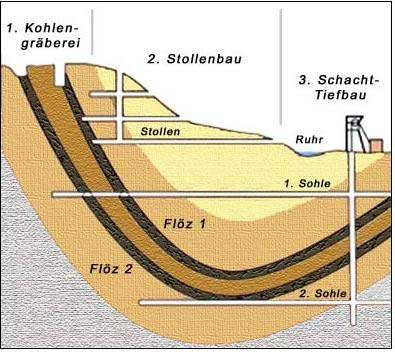
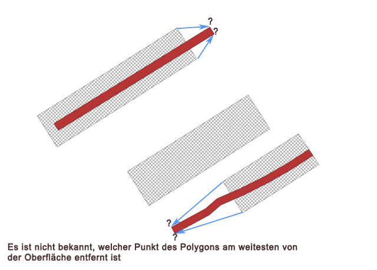
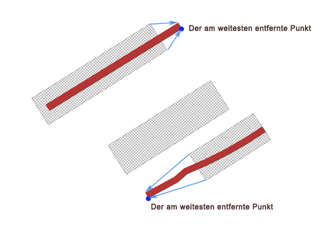
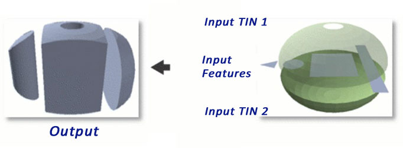
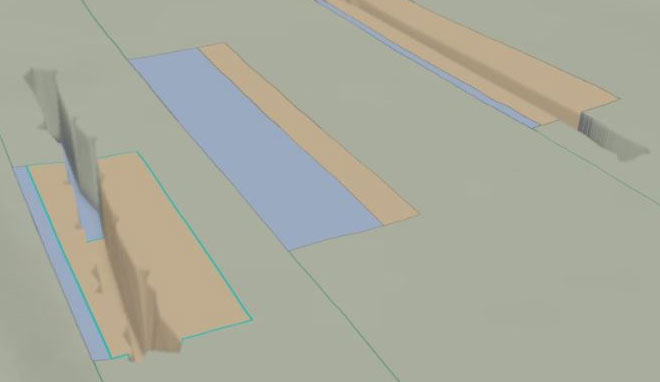
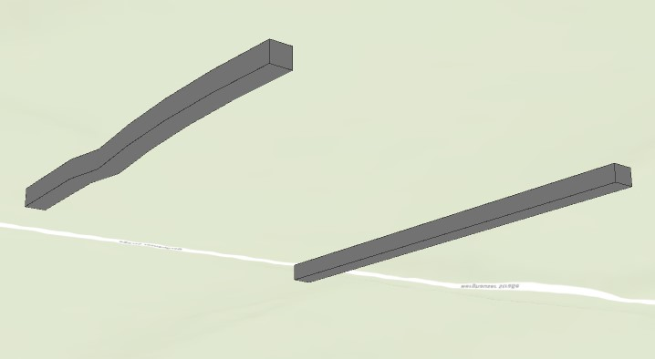
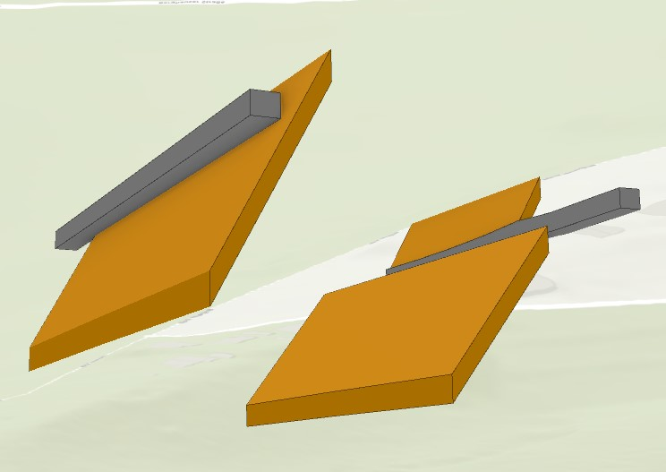

GIS-technische Umsetzung eines vorgegebenen Workflows zur Erstellung von 3D-Bergbaustrukturen.
25 August 2022 | Kirill Lisochenko & Martin Burzynski | Programmierung, Datenbearbeitung, 3D-ModellierungDie Ruhrkohle-Aktiengesellschaft (RAG) befasst sich neben den sogenannten „Ewigkeitsarbeiten“ in der ehemaligen Steinkohleregion an der Ruhr auch mit dem Risikomanagement des oberflächennahen Bergbaus. Die hinterblieben Hohlräume sind durch Umwelteinflüsse Einsturz gefährdet und können in den oberen Schichten zum Einsacken der Erdoberflächen führen. Um Unfälle zu vermeiden, weißt die RAG sogenannte Gefährdungsflächen aus, die aus historischen Risswerken ermittelt wurden. Diese stellen jedoch nicht die exakte Position der bergbaulichen Strukturen da und können nur durch weitere Berechnungen verortet werden. Mittels GIS ist es möglich dreidimensionale Körper zu visualisieren. Ein Problem stellt dabei die Größe der Datenmenge dar. Bei einem Datensatz von ca. 16 000 Strecken, Abbauen und anderen bergbaulichen Objekten, ist die manuelle Bearbeitung nur mit einem extrem hohen Zeitaufwand realisierbar.
Das Ziel dieser Projektarbeit ist es ein Verfahren zu entwickeln, das bergbauliche Strukturen auf Grundlage ausgewiesener Gefährdungsflächen und anderen historischen Risswerkinformationen automatisiert darstellt. Das Projekt soll sich dabei auf Strecken und Abbauen beschränken.
Zur Realisierung des Projektziels werden die Programme ArcGIS Pro, Code Editoren wie Spyder oder VScode und verschiedene Python bibliotheken verwendet. Mit deren hilfe soll ein Skript entworfen werden, dass Strecken und Abbaue als 3D Feature Classes in einer Geodatabase automatisiert hinterlegen kann. Das Skript soll bei der Übergabe als benutzerfreundliches tool in ArcGIS Pro anwendbar sein. Die Eingabe in der GUI (Graphical User interface soll aus folgenden Dateien bestehen:

Beim Schreiben eines Python-Skripts müssen Strecken und Abbaue einzeln betrachtet werden. Strecken dienten damals als unterirdischen Tunner, die zur Erschließung und Aufteilung der Abbaufelder ausgebaut wurden. Sie fungierten als Verbindungsstücke zu den Schächten und wurden für den Abtransport der Mineralien genutzt. Sie befinden sich nahezu waagerecht im Raum und wurden bei der Bearbeitung der 3D-Körper ohne Rotation erstellt. Abbaue hingegen orientieren sich entlang der Floeze, welche in einem gewissen Floezeinfallswinkel vorliegen. Die Abbaue liegen somit rotiert im Raum und müssen getrennt in der Skriptbearbeitung behandelt werden.
Zu Beginn des Skriptentwurf müssen die sidepackages arcpy und math importiert werden. Erst dann können ArcGIS Funktionen und Methoden und mathematischen Formel genutzt werden. Zur Darstellung von Höheneigenschaften können in ArcGIS Pro verschiedene Höhenmodelle genutzt werden. Für die extrudebetween Funktion müssen jedoch sogenannte TINs (Triangulated Irregular Networks) vorliegen.
Da Strecken weitgehend waagerecht verlaufen und die Sohlenhöhen als gleichbleibend angenommen werden, wird den TINs jeweils nur eine Höhe zugeteilt. Die Höheninformation liegen weder in den Attributen der shp-files noch in der Excel-Tabelle vor und müssen aus der Teufenhöhe und einem digitalem Geländemodell (DGM) berechnet werden. Dabei wird mit der arcpy-Funktion featureClasstoFeatureClass zur weiteren Bearbeitung eine Kopie aus den Gefährdungsflächen erstellt. Diese liegt nun in Form einer Feature Class (FC) vor, welche fortan als Strecken FC betrachtet wird. Im nächsten Schritt soll die FC um ausgewählte Spalteninformationen der Excel-Tabelle erweitert werden. Dafür wurden mit der Funktion arcpy.management.AddFields die Spalten mit den Namen 'floezeinfallen', 'maechtigkeit', 'teufe_festgestein', 'teufe_karbon', 'teufe_grubenbau' erweitert, die aus der exceltabelle in gleicher Reihenfolge entnommen wurden. Mit der gleichen Ausführung werden die Spalten 'Z_Wert_Boden' und 'Z_Wert_Decke' erstellt, die später die berechneten Z-Werte der Strecken als Eintrag erhalten.
Im nächsten Schritt werden die Informationen der Excel-Tabelle in die neuen Spalten der Strecken FC überführt. Hierfür wird der UpdateCursor genutzt und für die Zuordnung der Spalten- Informationen zwei If-Bedingungen gesetzt. Dabei werden beim iterieren nur den Objektreihen Informationen zugewiesen bei denen die Namen und Gefahrenarten der Strecken identisch mit denen der Excel-Tabelle sind (sinngemäße Übertragung:-> „NAME“ == „Bezeichnung“ AND „GEF_ART“ == „Grubenbauart“).

Um die Sohlenhöhen der Strecken Features berechnen zu können, wird die Höheninformation im Bereich der einzelnen Features aus einem Pixel der DGM (absolute Höhe) entnommen und um die Teufe reduziert. Die Firsthöhen ergeben sich aus den Sohlenhöhen und der Mächtigkeit. Beide Informationen sind durch die Spaltenerweiterung verfügbar. Da Oberflächen unregelmäßige Strukturen aufweisen, soll die abgegriffene Höhe aus der DGM immer von einem der Anfangspunkte der Strecken gewählt werden. Dieser wird mit der distanceto-Methode ermittelt, da der Stützpunkt mit der größten Distanz zur Abbaue gleichzeitig den Anfang der Strecken markiert.

Über den searchcursor werden die Punkte der Features ausgelesen und die Distanzen zur Abbaue- Geometrie verglichen. Ist die Entfernung größer gelangen die Koordinaten des Punktes in eine neue Liste. Die XY-Koordinaten mit der kleineren Entfernung wir aus der Liste ersetzt, sodass am Ende nur ein Punkt übrig bleibt. Diese Methode wird durch alle Stützpunkte iteriert bis der Punkt mit der größten Entfernung feststeht. Die Startpunkte bzw. Abgreifpunkte zur Höhenermittlung werden in einer dictionary festgelhalten. Als keys werden die Streckennamen und Koordinaten als values definiert.
Da das DGM im UTM-Format vorliegt, müssen die Koordinaten der Abgreifpunkte aus dem Gauss-Krüger-System (DHDN 3- Degree Gauss Zone 2) ins UTM-System (ETRS 1989 UTM Zone 32N) umgewandelt werden. Dies wird mit der Funktion Transformer.from_crs und transformer.transform durchgeführt. Die Höhenwerte werden anschließend aus den umgewandelten Variablen mit der getcellvalue methode aus der DGM ausgelesen und in eine neue Liste mit Zuordnung der Strecken gespeichert.

Für die 3D-Visualisierung wurde hier die Funktion extrudebetween gewählt. Dabei werden prinzipiell drei digitale Objekte benötigt. Zum einen b ein Oberflächenmodell, dass die Sohlenhöhe der Strecken begrenzt, also die absolute Höhe des Streckenbodens darstellt. Zum anderen ein zweites Höhenmodell mit der absoluten Höhe der Firste, die der Streckendecke.
Das dritte Objekt ist eine Liste mit den X- und Y- Koordinaten des zu erstellenden 3D-Körpers. Diese sind bereits bekannt, da die Strecken exakt unter der Gefährdungsflächen liegen und somit die Koordinaten der zugehörigen Gefährdungsfläche kopiert bzw. abgegriffen werden können. Die extrudebetween Methode erstellt mit ihrer Ausführung innerhalb der zugewiesenen Oberflächenmodellen und im Bereich der XY-Koordinaten einen neuen 3D Körper und speichert diese in eine neue FeatureClass ab. Im folgenden Abschnitt soll noch einmal detaillierter auf die Methode zum Abgreifen der XY Koordinaten und der Erstellung der Oberflächenmodelle eingegangen werden.
Die meisten Oberflächenanalysen in GIS werden von Raster- oder TIN-Daten ausgeführt

Zur automatisierten Feature Class Erstellung der dreidimensionalen Strecken werden nur noch zwei Funktionen benötigt. Wie bereits zu Beginn des Hauptteils erwähnt, bedarf es neben den XYGeometrien der Strecken, die jeweiligen TINs aus den Firsthöhen und Sohlenböden um die extrudebetween-Funktion durchführen zu können. Diese können nun für jedes Feature erstellt werden. Bei den in_features muss dabei vor der Ausführung der Parameter sf_type mit „Soft Clip“ angegeben werden. Mit dieser Einstellung wird die Rolle des Eingabe-Features definiert, die so die TIN-Oberflächenerstellung auf die Flächen der einzelnen Features begrenzt. Jedes Feature erhält dadurch jeweils zwei individuelle TINs. Wie auch die Feature Classes werden TINs in eine file Gedatabase abgespeichert und können in ArcGIS Pro visualisiert werden.
Modellierung und Erstellung eines dreidimensionalen Objekts auf der Grundlage der Daten

Im letzten Schritt kann nun die extrudebetween-Funktion angewandt werden. Dabei müssen keine weiteren Parametereinstellungen beachtet werden. Die TINs und Strecken-Polygone sind exakt so beschnitten, dass nur noch die Eingabe-Werte, der Speicherort und der 3D Feature Class Name eingegeben werden muss. Die erstellten TINs werden anschließend mit der management.Delete- Funktion zur Reduktion überflüssiger Daten gelöscht. Die Strecken-Körper können jetzt in ArcGIS Pro visualisiert werden (Abb. rechts). In ArcGIS Pro muss dafür die Anzeige unter dem Reiter Ansicht von 2D Karte in eine globale Szene umgewandelt werden. Um das Sichtfeld unter der Oberfläche zu aktivieren muss das Navigieren unter der Oberfläche aktiviert sein.
Am Ende der Berechnungen und Transformationen haben wir ein fertiges 3D-Modell

Aus dem bis hierhin
beschriebenen Skripts wurde mit der tool-box und einer GUI in ArcGIS pro eine
benutzerfreundliches
tool entworfen. Dabei wurde die GUI so erstellt dass man die Pfade der Eingabe-Dateien
einträgt, wie bereits im Teil
Lösungsansatz beschrieben, eine Geodatabase als output-path und den neuen 3D Feature
Class Namen.
In Eigenleistung wurde ein Programm geschrieben, das 3D Objekte von bergbaulichen
Strecken automatisiert ausgibt und
eine 2D Feature Class der Abbau-Flächen erstellt.
Den Projektpartnern Herrn Schnell
und Herrn Wiland von der RAG wurden nach Abschluss der
Projektzzeit das Python-Skript
als py-Datei, das fertige tool als tbx-Datei und dieser Projektbericht digital
übergeben.
Unten können Sie ein kurzes Video sehen, das 2D-Polygone zeigt, die aus den Originaldaten gewonnen wurden, sowie 3D-Objekte, die mit den oben genannten Visualisierungsmethoden gewonnen wurden.